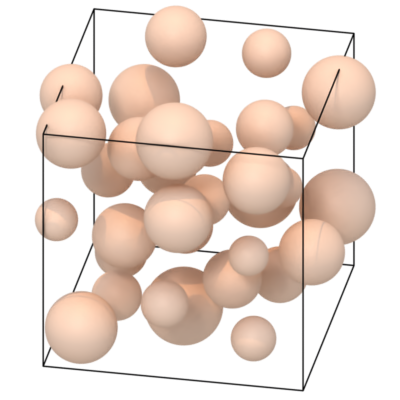
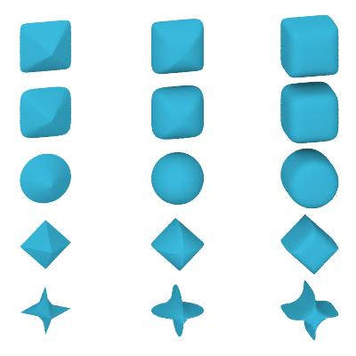
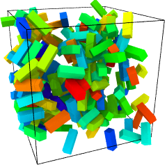
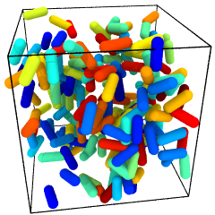

Non-spherical particle shapes
Ellipsoidal particles
User-defined particle shapes
OVITO has built-in support for a range of different particle shapes aside from the standard spherical shape. Furthermore, it supports user-defined particle shapes, which are specified in terms of polyhedral meshes:
spheres
ellipsoids
superquadrics
cubes, boxes
cylinders
spherocylinders (capsules)
circles (discs that follow the view direction)
squares (billboards that follow the view direction)
user-defined polygonal meshes
You can set the display shape of particles globally for the Particles visual element or on a per particle type basis in the Particle types panel.
Size and orientation of particles are controlled by properties
By assigning values to the following particle properties in OVITO, you can control the orientation and the dimensions or size of each particle individually:
Radius(scalar)
Aspherical Shape(X, Y, Z)
Orientation(X, Y, Z, W)
Superquadric Roundness(Phi, Theta)
The property assignment can happen directly during import of your data file into OVITO by mapping values from corresponding file columns to the right target properties in OVITO. Furthermore, you can subsequently assign values to these properties as needed by inserting the Compute property modifier into the data pipeline.
The orientation of non-spherical particles is controlled by the Orientation particle property,
which consists of four components \(\mathrm{q} = (x, y, z, w)\) forming a quaternion.
A quaternion is a mathematical representation of an arbitrary rotation in three-dimensional space, similar to (but more compact than)
a rotation matrix.
Note that OVITO employs a notation for quaternions that follows the work of Ken Shoemake. This convention may slightly differ from other notations you find in the literature (e.g. on Wikipedia). The four quaternion components \((x, y, z, w)\) are sometimes interchanged and written as \((q_r,q_i,q_j,q_k) = (w',x',y',z')\) instead. Thus, during import of orientational data into OVITO, you may have to remap the four input components of the quaternions to the right target components.
The Orientation and Aspherical Shape particle properties are typically loaded from data files written by some simulation code. The LAMMPS simulation code, for example,
allows you to output this per-particle information to a dump file using the following LAMMPS script commands:
compute orient all property/atom quatw quati quatj quatk
compute diameter all property/atom shapex shapey shapez
dump 1 all custom 100 ellipsoid.dump id type x y z &
c_q[1] c_q[2] c_q[3] c_q[4] &
c_diameter[1] c_diameter[2] c_diameter[3]
During import of the dump file in OVITO, you should map the quati, quatj, quatj, and quatw atom attributes from LAMMPS
to the Orientation.X, Orientation.Y, Orientation.Z, and Orientation.W particle properties in OVITO (in this exact order).
This mapping will be established automatically if you assign the right names to the columns
when writing the dump file:
dump_modify 1 colname c_q[1] quatw colname c_q[2] quati colname c_q[3] quatj colname c_q[4] quatk
dump_modify 1 colname c_diameter[1] shapex colname c_diameter[2] shapey colname c_diameter[3] shapez
Similarly, the shapex, shapey, and shapez columns will be mapped to the properties Aspherical Shape.X, Aspherical Shape.Y, and Aspherical Shape.Z
within OVITO, which controls the principal semi-axes of non-spherical particles as described below.
Note
The correct mapping can be set up automatically by OVITO only if you name the dump file columns as specified here. Otherwise, you may have to adjust the mapping by hand in the Edit column mapping dialog, which is accessible from the file import panel after opening the dump or xyz file.
Spheres
{kind=link}
The sphere particle shape is defined by the mathematical equation
\({\displaystyle {\frac {x^2 + y^2 + z^2}{r^2}} = 1}\).
The sphere radius \(r\) is controlled by the per-particle property Radius. If not present, the radius is determined by the
particle type or, globally, by the Particles visual element.
The Position particle property specifies an additional translation of the spherical equation above away from coordinate system origin, of course.
Ellipsoids
{kind=link}
The ellipsoid particle shape is defined by the equation
\({\displaystyle {\frac {x^2}{a^2}}+{\frac {y^2}{b^2}}+{\frac {z^2}{c^2}} = 1}\).
The length of the principal semi-axes \(a\), \(b\), \(c\) of the ellipsoid are controlled by the per-particle property Aspherical Shape,
which has three components X, Y, and Z (all positive). If all three components of the property are zero for a particle,
OVITO falls back to \(a=b=c=r\), with \(r\) being the spherical radius of the particle as defined above.
Superquadrics
{kind=link}
The shape of superquadric particles is defined by the equation
\({\displaystyle \left( {\left| \frac{x}{a} \right| ^{(2/\phi)}} + {\left| \frac{y}{b} \right| ^{(2/\phi)}} \right) ^{(\phi/\theta)} + {\left| \frac{z}{c} \right| ^{(2/\theta)}} = 1}\).
Like ellipsoidal particles, the superquadric shape has three semi-axes \(a\), \(b\), \(c\), which are specified by
the Aspherical Shape particle property. The two parameters \(\phi\) and \(\theta\) are called east-west and north-south exponents and determine
the blockiness/roundness of the superquadric ellipsoid. Both must be strictly positive. The normal sphere (or ellipsoid) is reproduced by setting \(\phi = \theta = 1\).
In OVITO, the values of \(\phi\) and \(\theta\) are specified by the Superquadric Roundness property, which is a vector particle property having two components.
Boxes
{kind=link}
The size of box-shaped particles is given by the semi-axes \(a\), \(b\), \(c\), which are multiplied by a factor of two to yield the edge lengths of the box along the
Cartesian coordinate axes. In OVITO the semi-axes are determined by the particle property Aspherical Shape, which has three components.
If not present, or if the components of Aspherical Shape are zero for a particle, OVITO falls back to using the Radius particle property and renders a cube.
Cylinders
The cylindrical shape is given by the radius \(r\) and the height \(h\) (in the local coordinate system of the cylinder). The natural orientation of the cylinder is along the positive z-axis,
with an optional rotation specified by the Orientation particle property. \(r\) and \(h\) are determined by the particle property components Aspherical Shape.X and Aspherical Shape.Z.
The second vector component (Y) is ignored. If Aspherical Shape is not defined, OVITO will fall back to \(h = 2 r\), with \(r\) taken from the Radius property instead.
Spherocylinders (capsules)
{kind=link}
The size of spherocylindrical particles is controlled in the same way as cylindrical particles. OVITO additionally renders two hemispheres at each end of the cylinder extending its height.
Circles and squares
Circles and squares are two-dimensional, i.e. flat, shapes, whose size is controlled by the Radius particle property. The orientation
of each particle in three-dimensional space is determined automatically such that it exactly faces the viewer. Thus, their orientations are view-dependent,
and the Orientation particle property, if present, is ignored. In other words, you don’t have the possibility to control their orientations explicitly
(use a mesh-based shape instead if you need control).
Note
Rendering of flat circles and squares is only possible with the OpenGL renderer of OVITO. The Tachyon and OSPRay rendering engines do not support this kind of particle shape.
User-defined shapes
{kind=link}
On the level of individual particle types, you can assign custom particle shapes imported from external geometry files. OVITO supports loading general polyhedral meshes, which can serve as user-defined particle shapes, from various file input formats such as STL, OBJ, or VTK/VTP.
Some simulation formats such as HOOMD/GSD can embed information on particle shapes directly in the simulation output file, which will be picked up by OVITO automatically. In most cases, however, you’ll have to load the user-defined particle shape by hand for each particle type in the Particle types panel. Set the particle type’s Shape to Mesh/User-defined and import the shape geometry from a file that you have prepared outside of OVITO.
The vertex coordinates of the loaded polyhedral mesh get scaled by the value of the Radius property of each particle (if present)
and rotated by the quaternion stored in the Orientation property (if present). Alternatively, you can set the
Display radius parameter of the type to scale all particles of that type or adjust the Radius scaling factor
in the Particles visual element to scale all particles uniformly.